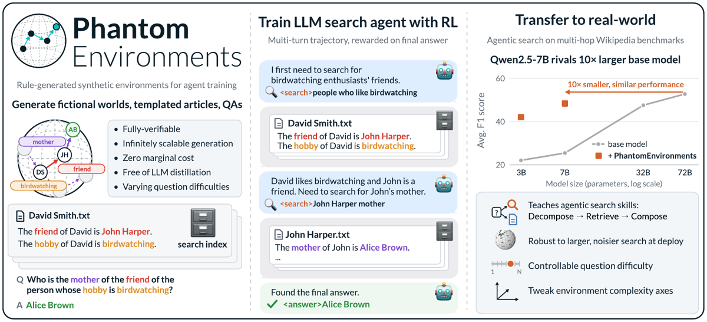
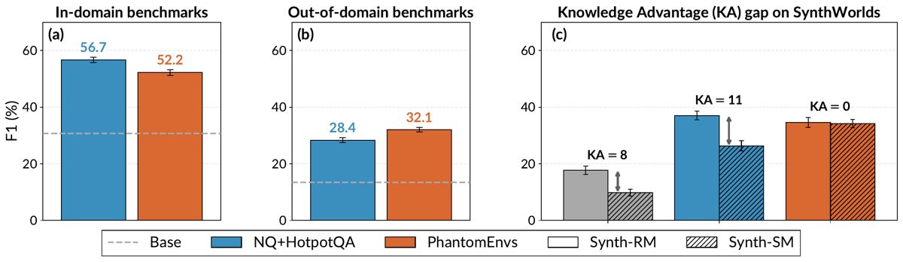
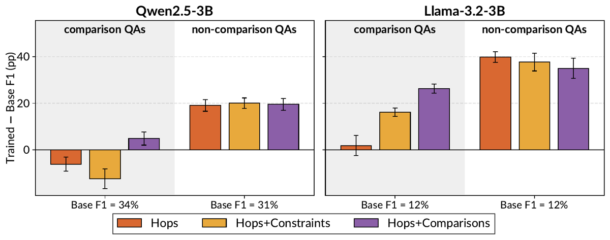

TL;DR. Un environnement RL multi-turn de recherche documentaire entièrement généré par règles (graphe social fictif → articles templatés → questions CFG → requête Prolog = vérité terrain), donc à coût marginal nul, sans humain ni LLM dans le pipeline, suffit à entraîner par GRPO des agents de search qui transfèrent à six benchmarks multi-hop réels, et qui battent un entraînement sur données réelles appariées sur les benchmarks postérieurs au cutoff.
Claim principal, formulé précisément. En RL full fine-tune (GRPO, reward = F1 sur la réponse finale) de 4 LLM 3B–7B sur ≈55 K questions issues d'un univers fictif de 1 000 personnes [§3.2, App. A.3], les auteurs affirment : (i) gains sur les 6 benchmarks réels, ×1.7 en moyenne sur HotpotQA/2Wiki/MuSiQue et ×2.2 sur Synth-RM/Synth-SM/FRAMES [§1, Tab. 2] ; (ii) à budget de données identique (55 K), l'entraînement réel NQ+HotpotQA gagne en in-domain (Qwen3B : 56.7 vs 52.2 F1) mais perd en out-of-domain (28.4 vs 32.1) [Fig. 4] ; (iii) le Knowledge Advantage gap SynthWorlds passe de 8 % (base) et 11 % (entraînement réel) à 0 % avec PhantomEnvs [Fig. 4c] ; (iv) « search scaling » émergent chez Qwen (nb de requêtes ∝ difficulté) [Fig. 3] ; (v) l'axe hops linéaires domine le transfert, les contraintes nuisent en récompensant un raccourci de requête verbatim [§5, App. B.1].
⚠️ Trois réserves d'emblée. (a) Le gain OOD revendiqué vient presque entièrement de Synth-SM, qui est lui-même fictif (donc en-distribution pour PhantomEnvs) et de FRAMES ; sur Synth-RM — le seul benchmark réel vraiment post-cutoff (Wikidata janvier 2025) — l'entraînement réel reste devant (37.6 vs 35.9 pour Qwen3B [Tab. 4] ; 43.2 vs 40.3 pour Qwen7B [Tab. 5]). (b) Le code n'est pas publié malgré la reproducibility statement. (c) La figure 1 annonce « Qwen2.5-7B rivals 10× larger base model » avec une courbe 3B/7B/32B/72B dont aucun chiffre 32B/72B n'existe nulle part dans le papier.
Origine des tâches : 100 % synthétiques, générées par règles, sans aucun humain ni LLM [§1, Tab. 1]. Le générateur est PhantomWiki (Gong et al. 2025, même groupe), étendu ici pour les contraintes et les comparaisons [§5, App. A.3]. Statement explicite : « We have not used generative AI tools for generating synthetic datasets » [AI use statement].
Pipeline de construction [App. A.3] : 1. Univers : 1 000 individus, organisés en 100 arbres familiaux de ≤ 10 personnes, profondeur max 10, relation set « easy-mode » de PhantomWiki (amitié + famille immédiate uniquement, pas de relations dérivées type grand-père). 2. Corpus : chaque individu → un article templaté en format wiki (ex. tiré de la Fig. 1 : « The friend of David is John Harper. The hobby of David is birdwatching. »). Le corpus d'entraînement ne fait donc que 1 000 documents. 3. Questions : grammaire context-free à profondeur CFG 16 → chaînes de jusqu'à 7 hops relationnels (« the sister of the friend of the parent of Alice »), ancrées soit sur une personne, soit sur un attribut terminal (« whose hobby is birdwatching ») [§3.1, §5]. 4. Vérité terrain : chaque question compile vers une requête Prolog parallèle exécutée sur le graphe de l'univers → réponses gold par construction, possiblement multiples [§3.1]. 5. Échantillonnage bidirectionnel (contribution propre, App. A.3.1) : le sampler par défaut de PhantomWiki part d'une entité et marche en avant, ce qui sur-représente les feuilles du graphe comme réponses (biais positionnel). Ici : on tire un index d'ancrage a ∈ {0..k} uniformément, on marche en arrière vers le slot 0 puis en avant vers k, et on vérifie l'unicité en exécutant la requête Prolog complète — sinon rejet et rééchantillonnage. Stratégies d'ancrage : uniform (défaut), balanced, fixe (ablation). 6. Filtrage : les questions d'agrégation (« how many… ») sont retirées car « easy to reward-hack » [App. A.3] — anti-hacking by design, avant tout entraînement.
Volume : ≈55 K questions d'entraînement + 5 K de validation après filtrage, pour la config Hops [App. A.3]. Volumes des configs Hops+Constraints et Hops+Comparisons : non précisé. 1 seule époque → chaque question vue une seule fois [§4.1].
Distribution de difficulté : difficulté = nombre de documents fictifs à traverser, connue à la génération [§4.1] — c'est ce qui permet toute l'analyse fine. Cell-balanced sampling [App. A.3] : pour Hops+Constraints, grille 2D (hops × contraintes), chaque cellule sous-échantillonnée à la taille de la plus petite → distribution uniforme et split 50/50 pure-hop (0–1 filtres) vs multi-contraintes (2–3 filtres). Pour Hops+Comparisons, grille (hops × kind ∈ {base, comparison}) avec soft cap à 4× la plus petite cellule (la cellule comparaison-0-hop est petite). 10 % de chaque cellule équilibrée en validation stratifiée.
Filtrage par pass@k du modèle de base : non — aucun filtrage par difficulté-modèle, aucun seuil de pass@k. La difficulté est contrôlée structurellement (hops), pas empiriquement. ⚠️ C'est une différence nette avec la plupart des pipelines RLVR récents.
Curriculum : aucun — pas d'ordre, pas de rééchantillonnage en cours d'entraînement. Juste un mélange équilibré fixé a priori [App. A.3]. Les auteurs listent la composition d'axes comme travail futur [Conclusion, Limitations].
Contamination et séparation train/test : c'est l'argument central du papier. Les univers fictifs « share no entities, no facts, and no document distribution with any real-world benchmark » [§1] → contamination structurellement impossible côté entraînement. Test OOD interne : deux univers générés avec des seeds différentes — Unseen 1K (même taille) et Unseen 10K (10×) — qui « share no factual knowledge overlap with any training data, seen either during pretraining or RL fine-tuning » [§4.1, App. A.3]. ⚠️ En revanche la contamination des benchmarks d'évaluation dans le pré-entraînement des modèles de base n'est pas traitée directement ; elle est contournée obliquement par le KA gap SynthWorlds.
Données SFT/IFT avant RL : aucune — pas de cold start, pas de SFT de format. RL directement depuis les modèles Instruct off-the-shelf [§3.2].
Coût humain : nul par construction. Aucun chiffre d'annotation, d'expert ou d'heure humaine n'est rapporté — et c'est le point.
Comparatif réel : 55 K questions sous-échantillonnées aléatoirement des ~160 K de NQ+HotpotQA livré avec Search-R1, pour égaliser exactement le budget de données [§3.2, App. A.2].
<search>…</search> et les résultats renvoyés par l'environnement dans <information>…</information> (top-3 passages). Prompt user verbatim [App. A.1] :Answer the given question using the search tool to retrieve relevant
information. Follow this process:
1. Reason about what you know and what you still need to find out with
the search tool. For complex questions, break them into sub-questions
and search for each part.
2. If you need more information, call the search engine:
<search> query </search>. Write focused, specific queries. If a query
returns unhelpful results, try a different phrasing or a more specific
sub-question.
3. Base your final answer only on information from the search results,
not on prior knowledge.
4. Once you have enough information, provide your answer inside
<answer> and </answer>. For multiple answers, use a comma-separated
list: <answer>Alice, Bob</answer>. Do not include explanations inside
the answer tags.
Question: {question}
Espace d'actions / outils : un seul outil, <search> query </search> → retourne les top-3 passages d'un index FAISS flat (exact) [§3.2, App. A.4]. Pas de signature formelle d'outil, pas de function calling : balises XML, recette Search-R1. Action terminale : <answer>…</answer>, liste séparée par virgules autorisée pour les réponses multiples.
Single/multi-turn, horizon : multi-turn. Entraînement : max 10 tours d'environnement, ≤ 500 tokens générés par tour, prompt max 8192 tokens [App. A.2]. Évaluation : jusqu'à 20 tours, contexte 32768 [§3.3] — volontairement plus généreux qu'à l'entraînement. Gestion du contexte long : troncature automatique des trajectoires qui dépassent, « but we don't observe this during training » [App. A.2]. Pas de résumé, pas de mémoire externe.
Exécution : pas de sandbox ni de conteneur — un serveur de retrieval dense local (FAISS flat, encodeur intfloat/e5-base-v2 768-d à l'entraînement, Qwen3-Embedding-4B 2560-d à l'évaluation) [App. A.4]. Environnement déterministe : index figé, recherche exacte (flat), génération de l'univers déterministe à seed donnée. Reset = nouvelle question. Timeouts : non précisé.
Terminaison : la trajectoire s'arrête quand le modèle émet une réponse finale, atteint la limite de tours, ou échoue à générer les balises [§3.2].
Gestion des erreurs d'outils et des sorties mal formées : quasi non précisée. Pas de balise valide → fin de trajectoire (donc reward 0 de facto), mais aucune pénalité de format explicite, aucun taux d'erreur de parsing rapporté, aucun message d'erreur renvoyé au modèle. ⚠️ Absence notable pour un papier qui entraîne 4 familles de modèles dont deux non-Qwen.
Exemple de trajectoire : deux trajectoires complètes sont recopiées en App. B.1 (voir §5 ci-dessous) ; un schéma de trajectoire fictive figure en Fig. 1 (requête « people who like birdwatching » → doc David Smith → « John Harper mother » → doc John Harper → <answer>Alice Brown</answer>).
Corpus d'évaluation : chaque benchmark fournit son propre corpus (paragraphes gold + distracteurs livrés avec les questions) ; pour FRAMES, articles Wikipédia à la révision juin 2023 découpés en passages de section [§3.3, App. A.4]. Test de déploiement bruité : index poolé réunissant les documents des 6 benchmarks, « au minimum 1.5× le corpus de FRAMES seul, jusqu'à 44× pour la paire SynthWorlds », avec documents interférents et quasi-doublons (Synth-RM vs Synth-SM sont identiques sauf faits réels/fictifs) [§4.1].
Type : exact, symbolique, par construction — la réponse gold est produite par exécution d'une requête Prolog sur le graphe de l'univers [§3.1, Tab. 1]. Le scoring est un F1 token-level après normalisation texte SQuAD-style [§3.2]. Pas de LLM-as-judge, pas de reward model, pas de rubrique — nulle part dans le papier.
Granularité : outcome-only, reward uniquement sur la réponse finale ; aucun reward de process, aucun crédit intermédiaire par tour [§3.2]. Crédit partiel via le F1 : une question PhantomEnvs peut admettre plusieurs réponses gold et le modèle peut en émettre plusieurs séparées par des virgules → reward continu dans [0,1] [§3.2, App. A.2]. Pour NQ+HotpotQA (1 seule réponse gold), le F1 dégénère en Exact Match 0/1 [§3.2, App. A.2].
Termes additionnels : aucun. Pas de bonus de format, pas de pénalité de longueur, pas de pénalité de nombre de requêtes. Le reward est le F1, point.
Fiabilité du vérifieur : non mesurée, et non mesurable au sens habituel — il n'y a pas d'accord inter-annotateurs à estimer puisque la vérité terrain est la sémantique du monde. Le seul mécanisme de contrôle est la vérification d'unicité de la réponse au moment de l'échantillonnage (rejet/rééchantillonnage si la requête Prolog ne renvoie pas une réponse unique) [App. A.3.1], avec un taux de rejet < 30 % pour les chaînes ≤ 4 hops sur |V| = 10 000 ; au-delà de 5 hops l'acceptation chute et ils basculent sur un beam sur les préfixes de chaîne classés par taille de l'ensemble candidat [App. A.3.1]. ⚠️ Côté évaluation, en revanche, le vérifieur est un F1 token-level sur des benchmarks réels (scorer canonique de chaque benchmark, garde yes/no/noanswer type HotpotQA pour HotpotQA/2Wiki/CofCA, scoring MuSiQue sinon [§3.3]) — métrique connue pour sur- et sous-créditer sur des réponses libres ; aucune validation humaine n'est rapportée.
Robustesse / anti-hacking : oui, et c'est un des points forts du papier, à deux niveaux. (i) Préventif : les questions d'agrégation sont exclues à la génération parce que « easy to reward-hack » [App. A.3]. (ii) Diagnostiqué a posteriori : l'environnement Hops+Constraints récompense un raccourci de requête verbatim, identifié et documenté [App. B.1] — voir §5. ⚠️ En revanche, le hack naturel du reward F1 multi-réponses — émettre une longue liste pour maximiser le rappel — n'est ni mesuré ni discuté ; le F1 pénalise la précision donc le garde-fou existe mathématiquement, mais aucune courbe de longueur de la liste de réponses n'est rapportée.
298bebc [App. A.2]. Reward outcome-only, masquage des tokens d'environnement.A_i = (r_i − mean(r_1..r_G)) / std(r_1..r_G) [App. A.2].<information> sont masqués à la fois de l'importance ratio et de la loss [§3.2, App. A.2].Écarts au GRPO standard : (a) clip-high à 2.0 sur le ratio d'importance au niveau token ; (b) pénalité KL contre la policy de référence supprimée (coef. 0) [App. A.2].
Hyperparamètres [App. A.2] :
| Paramètre | Valeur |
|---|---|
| Taille de groupe G | 8 rollouts/question |
| Batch | 256 prompts × 8 rollouts |
| Optimiseur | AdamW |
| LR | 1e-6 |
| Warmup | linéaire sur les 10 % premiers steps |
| Grad clip | 1.0 |
| KL | aucune (supprimée) |
| Clipping | clip-high token-level à 2.0 |
| Prompt max | 8192 tokens |
| Horizon | 10 tours, ≤ 500 tokens générés/tour |
| Époques | 1 (chaque question vue une fois) |
| Steps | non précisé ; ≈215 déduit de 55 K/256 et confirmé visuellement par l'axe des abscisses de la Fig. 2 (jusqu'à ~220) |
| Précision | fp32 full, FSDP2 ; rollouts via vLLM |
| Température / top-p | Qwen 1.0 / 1.0 ; Llama-3.2-3B 0.6 / 0.9 ; Phi-4-mini 0.8 / 0.95 — identiques à l'entraînement et à l'évaluation |
| Seeds | 2 par réglage |
| Retriever (train) | e5-base-v2, FAISS flat, top-3 |
Stabilité [App. A.2, « Training dynamics and instability »] : les auteurs rapportent explicitement des pics d'entropie et une dégénérescence de l'entraînement pour Phi-4-mini et Llama-3.2-3B, « souvent à ≈50 % du run », sur quelques runs de données réelles, et sur 1 seed de Llama sur l'ablation Hops+Constraints. Remède : « we report the prior saved policy checkpoint with the best held-out set performance ». Ils écartent PhantomEnvs comme cause (la dégénérescence apparaît côté données réelles et sur des seeds isolées) et citent MAI-Thinking-1 comme précédent d'instabilité à l'échelle frontier. ⚠️ Mon évaluation : c'est une sélection de checkpoint sur held-out appliquée de façon asymétrique (surtout au bras données réelles et à une ablation) ; ce n'est pas du final-checkpoint comparé à du final-checkpoint. L'effet joue plutôt en faveur de la baseline réelle (runs dégénérés rattrapés), donc il ne gonfle pas le résultat principal — mais il casse l'homogénéité du protocole.
Compute : 2 NVIDIA B200 par run, tous les entraînements ≤ 2 jours sur cette configuration [§3.2, App. A.2]. Ressources : NAIRR Pilot, Purdue Anvil AI, NVIDIA DGX Station Early Access [Acknowledgements]. Pas de GPU-heures totales, pas de coût par step.
Dynamique : Fig. 2 (F1 vs steps) montre une montée brutale dans les ~40 premiers steps puis une croissance lente ; Fig. 3 montre la montée du F1 à tous les niveaux de difficulté et l'apparition progressive du search scaling. Aucune courbe de reward d'entraînement, aucune courbe d'entropie, aucune courbe de longueur de réponse n'est publiée — seulement des courbes de F1 d'évaluation. ⚠️ Pour un papier qui parle d'instabilité par pics d'entropie, c'est une lacune.
Cas 1 — Raccourci de requête verbatim induit par Hops+Constraints (le cas central, très bien documenté) [§5, App. B.1]. - Comportement : une contrainte attributaire (date de naissance précise, métier, hobby) est information-rich ; une seule requête dense qui recopie la question entière fait souvent remonter directement le document gold, parce que l'attribut rare suffit à réduire l'ensemble candidat. L'agent n'a donc jamais besoin de décomposer la chaîne et contourne entièrement la décomposition de question. Le comportement, une fois appris, persiste au test : l'agent entraîné sur Hops+Constraints émet la question verbatim comme première requête sur « une écrasante majorité » des trajectoires réelles, et se contente de la paraphraser quand le retrieval échoue. - Comment détecté : (a) chute du transfert agrégé [Fig. 5 : Qwen3B 39.6 vs 42.1 pour Hops ; Llama 31.7 vs 35.1] ; (b) décomposition par catégorie de question sur CofCA et 2Wiki [Fig. 6, Fig. 11] ; (c) inspection de trajectoires, dont une paire recopiée verbatim en App. B.1 (question MuSiQue « What song did Paul McCartney write for the performer of Valotte? », gold « Hey Jude ») : l'agent Hops+Constraints émet la question puis cinq quasi-doublons paraphrasés et répond « Too Late for Goodbyes » (faux), tandis que l'agent Hops planifie la décomposition, résout l'entité pivot Julian Lennon puis la chanson, et trouve « Hey Jude ». - Correction : aucune correction — l'axe contraintes est simplement écarté comme axe d'entraînement. Les auteurs expliquent le phénomène (« real-world benchmarks rarely include the kind of information-rich attribute filters that make the shortcut work ») mais ne proposent ni pénalité, ni contre-mesure côté génération, ni ré-équilibrage. - ⚠️ Mon évaluation : c'est le résultat le plus transférable du papier. Le mécanisme est générique — tout attribut discriminant unique présent dans la question rend le retrieval dense mono-coup suffisant et détruit l'apprentissage de la décomposition.
Cas 2 — Questions d'agrégation retirées préventivement [App. A.3] : « how many… » exclues car « easy to reward-hack ». Comportement jamais observé puisque prévenu. Pas de justification chiffrée.
Cas 3 — Dégénérescence / pics d'entropie [App. A.2] : voir §4. Détecté par les courbes d'entropie (non publiées) ; corrigé par rollback au meilleur checkpoint held-out. Cause non identifiée, posée comme question ouverte.
Cas 4 — Transfert négatif sur les questions de comparaison (non nommé comme failure mode par les auteurs) [Fig. 6] : sur les questions comparison de CofCA, Qwen2.5-3B régresse par rapport à son modèle de base après entraînement — environ −6 pp avec Hops et −13 pp avec Hops+Constraints, et seulement +5 pp avec Hops+Comparisons (lecture graphique, valeurs non tabulées). Autrement dit, l'entraînement sur hops linéaires dégrade activement une catégorie de questions réelles tant que l'environnement ne la couvre pas. Les auteurs lisent cette figure comme « comparison training targets the matching real-world category » et ne commentent pas les deltas négatifs. ⚠️ C'est pourtant un avertissement direct : un environnement par règles dont la distribution de questions est étroite spécialise l'agent, y compris au détriment de catégories non couvertes.
Cas 5 — Rétention des connaissances [Tab. 8] : testé, et globalement rassurant — PopQA, MMLU et perplexité Wiki-2018 quasi inchangés après RL (synthétique ou réel). Exceptions signalées par les auteurs eux-mêmes : Phi-4-mini + PhantomEnvs perd 2.1 pp de PopQA SubEM (17.59 → 15.50) et prend +6.8 % de perplexité (16.74 → 17.87). Pas d'oubli catastrophique : « RL fine-tuning largely teaches procedural skill ».
Non mentionné : aucun cas de gaming du F1 par liste de réponses longue ; aucun cas de sortie mal formée ; aucune analyse de la longueur de raisonnement. Vu la conception du reward (F1 pénalisant la précision, outcome-only, pas de terme de format), l'absence du premier est plausible mais non démontrée, et l'absence du troisième est simplement non instrumentée.
298bebc [App. A.2]. Sync vs async : non précisé (SkyRL supporte les deux ; le papier ne tranche pas). Parallélisme des environnements : non précisé.| Chiffre annoncé | Où il est annoncé | Source dans le papier | Verdict |
|---|---|---|---|
| « ×1.7 sur les benchmarks Wikipédia-2018 (HotpotQA, 2Wiki, MuSiQue) » | abstract + §1 | Tab. 2 | introuvable — l'agrégation n'est pas définie. Mes recalculs depuis Tab. 2 : ratio des moyennes sur les 4 modèles = 1.91 ; moyenne des ratios par modèle = 2.12 ; médiane des ratios par modèle = 1.74 (seule reconstruction compatible avec 1.7, non explicitée) |
| « ×2.2 sur les benchmarks récents et difficiles (Synth-RM, Synth-SM, FRAMES) » | abstract + §1 | Tab. 2 | introuvable — idem : ratio des moyennes = 2.30, moyenne des ratios = 2.75, médiane par modèle = 2.23 |
| « Llama-3.2-3B s'améliore jusqu'à ×7.1 sur Synth-SM » | §4.1 + légende Tab. 2 | Tab. 2 : 3.8 → 27.0 | confirmé (27.0/3.8 = 7.11) |
| « au minimum ×3.2 pour les autres benchmarks » (Llama) | §4.1 | Tab. 2 | confirmé — ratio minimal = 3.26 (2Wiki : 11.5 → 37.5) |
| « Qwen3B et Qwen7B s'améliorent en moyenne ×1.9 » | §4.1 | Tab. 2 | confirmé — 42.15/22.08 = 1.91 et 48.43/25.53 = 1.90 (ratio des moyennes sur 6 benchmarks) |
| « often outperforming real-world training data on newer benchmarks » | abstract | Fig. 4b (Qwen3B : 32.1 vs 28.4) ; App. Fig. 9 et 10 : pour Llama et Phi, PhantomEnvs « reduces but does not fully close the gap » | sur-généralisé — vrai pour les 2 Qwen seulement ; faux pour Llama et Phi. Et même chez Qwen, sur Synth-RM (le seul benchmark réel post-cutoff hors FRAMES) l'entraînement réel reste devant : 37.6 vs 35.9 [Tab. 4] et 43.2 vs 40.3 [Tab. 5] |
| KA gap : base 8 %, NQ+HotpotQA 11 %, PhantomEnvs 0 % (Qwen3B) | §4.2 + Fig. 4c | Tab. 2 : base 17.7 − 9.9 = 7.8 ; PhantomEnvs 34.6 − 34.2 = 0.4 | confirmé pour base et PhantomEnvs ; les 11 % du bras NQ ne sont tabulés nulle part (Tab. 4, 1 seed : 37.6 − 25.1 = 12.5 → cohérent) |
| « agents robustes au corpus poolé : base −1.6, entraîné −1.9 F1 » | §4.1 | Tab. 3 : 25.5 → 23.9 et 48.4 → 46.5 (Qwen7B) | confirmé pour Qwen7B, mais le « every agent degrades, but only slightly » est sur-généralisé : Llama-3.2-3B + PhantomEnvs perd 5.2 pts (35.1 → 29.9, soit −15 % relatif) [Tab. 7] |
| « Qwen2.5-7B rivals 10× larger base model » / « 10× smaller, similar performance » | Fig. 1 (panneau droit : courbe base 3B/7B/32B/72B) | — | introuvable — aucun chiffre 32B ou 72B n'apparaît dans le corps ni dans les annexes (grep sur full.tex : zéro occurrence). Seuls les points 3B et 7B sont traçables (Tab. 2, Tab. 3) |
| « models do not overfit […] and continue to improve on benchmarks », « benefit of data scaling » | §4.1 | Fig. 2 | sur-généralisé — lecture graphique : Phi-4-mini régresse après ~130 steps sur 2Wiki, MuSiQue et Synth-RM ; Qwen3B/7B plafonnent après ~85 steps ; seul Llama-3.2-3B progresse jusqu'au bout. La légende de la Fig. 2 est, elle, honnête (« While some runs saturate… ») |
| « hop count drives transfer more than constraints or comparisons » | abstract | Fig. 5 : Qwen3B 42.1 / 39.6 / 41.1 ; Llama 35.1 / 31.7 / 31.7 | confirmé mais faible — écart Hops vs Hops+Comparisons = 1.0 pp sur Qwen3B avec barres d'erreur qui se recouvrent ; écart net seulement vs Hops+Constraints (2.5 et 3.4 pp) |
| « zero marginal cost », « no LLM in the pipeline » | abstract | §3.1, App. A.3 (CFG + Prolog), AI use statement | confirmé par construction ; ⚠️ introuvable côté chiffres : aucun coût de génération n'est mesuré |
| « ≈55 K questions d'entraînement » | §3.2 | App. A.3 : ~55 K train + 5 K val (Hops) | confirmé ; volumes Hops+Cons / Hops+Comp non précisés |
| « rejection rates below 30 % for chains ≤ 4 on |V| = 10 000 » | App. A.3.1 | — | introuvable — affirmation sans table, courbe ni protocole |
| « pooled corpus ≥ 1.5× FRAMES, jusqu'à 44× la paire SynthWorlds » | §4.1 | — | introuvable — aucune table de tailles de corpus |
| « RL fine-tuning leaves pretrained knowledge intact » (PopQA −2.1 pp pour Phi+PEnv, PPL +7 %) | Tab. 8 | Tab. 8 : 17.59 → 15.50 ; 16.74 → 17.87 | confirmé (auto-signalé par les auteurs) |
Transfert brut, base → PhantomEnvs (F1, moyenne ± SE sur test sets et 2 seeds) [Tab. 2] :
| Modèle | HotpotQA | 2Wiki | MuSiQue | Synth-RM | Synth-SM | FRAMES |
|---|---|---|---|---|---|---|
| Qwen2.5-3B | 40.1 → 60.9 (+20.8) | 30.3 → 56.4 (+26.1) | 21.9 → 39.4 (+17.5) | 17.7 → 34.6 (+16.9) | 9.9 → 34.2 (+24.3) | 12.6 → 27.4 (+14.8) |
| Qwen2.5-7B | 44.2 → 64.1 (+19.9) | 29.1 → 66.7 (+37.6) | 24.5 → 44.7 (+20.2) | 23.6 → 39.1 (+15.5) | 15.6 → 40.6 (+25.0) | 16.2 → 35.4 (+19.2) |
| Llama-3.2-3B | 16.8 → 55.8 (+39.0) | 11.5 → 37.5 (+26.0) | 9.4 → 35.9 (+26.5) | 8.6 → 30.8 (+22.2) | 3.8 → 27.0 (+23.2) | 6.8 → 23.4 (+16.6) |
| Phi-4-mini | 36.1 → 47.6 (+11.5) | 21.8 → 42.3 (+20.5) | 17.9 → 27.2 (+9.3) | 17.3 → 26.7 (+9.4) | 10.3 → 18.3 (+8.0) | 14.1 → 21.6 (+7.5) |
Gains absolus entre +7.5 et +39.0 pp, sur les 24 cases, tous positifs. C'est massif et homogène — mais les bases sont très faibles (Llama-3.2-3B à 3.8 F1 sur Synth-SM).
Tête-à-tête réel vs fictif, budget apparié 55 K (Qwen3B, 2 seeds) [Fig. 4] : in-domain NQ+HotpotQA 56.7 vs PhantomEnvs 52.2 (−4.5 pour le fictif) ; OOD NQ+HotpotQA 28.4 vs PhantomEnvs 32.1 (+3.7 pour le fictif).
Décomposition par benchmark du tête-à-tête (1 seed, « paper setup », PhantomEnvs vs NQ+HotpotQA) [Tab. 4 et Tab. 5] :
| Benchmark | Qwen3B : PEnv / NQ+HQA | Qwen7B : PEnv / NQ+HQA |
|---|---|---|
| HotpotQA | 61.5 / 65.9 | 62.2 / 74.1 |
| 2Wiki | 56.0 / 62.5 | 65.0 / 71.0 |
| MuSiQue | 41.0 / 41.4 | 47.1 / 51.6 |
| Synth-RM (réel, post-2023) | 35.9 / 37.6 | 40.3 / 43.2 |
| Synth-SM (fictif) | 34.8 / 25.1 | 41.8 / 33.8 |
| FRAMES (réel, juin 2023) | 27.6 / 21.3 | 34.9 / 30.7 |
⚠️ Lecture critique décisive : l'avantage de PhantomEnvs sur les benchmarks « récents » provient de Synth-SM (+9.7 / +8.0), qui est un corpus fictif — donc la distribution d'entraînement de PhantomEnvs — et de FRAMES (+6.3 / +4.2). Sur Synth-RM, c'est-à-dire la même structure de graphe avec de vraies entités Wikidata de janvier 2025, les données réelles restent devant pour les deux Qwen. Le récit « PhantomEnvs est plus robuste au post-cutoff » repose donc sur un seul benchmark réel (FRAMES) plus un benchmark fictif. La conclusion honnête est plus étroite que celle de l'abstract : l'entraînement fictif rend l'agent indifférent au caractère réel ou fictif du corpus d'évaluation (KA = 0) — pas l'entraînement fictif bat l'entraînement réel sur le monde réel récent.
| Environnement | Qwen2.5-3B (F1 moyen) | Llama-3.2-3B (F1 moyen) |
|---|---|---|
| Base | 22.1 | 9.5 |
| Hops | 42.1 | 35.1 |
| Hops+Constraints | 39.6 | 31.7 |
| Hops+Comparisons | 41.1 | 31.7 |
[Fig. 5 ; valeurs imprimées sur la figure, cohérentes avec Tab. 6 et Tab. 7]
298bebc, PhantomWiki, modèles et benchmarks publics) rendent une réimplémentation plausible mais non triviale — notamment les extensions CFG/Prolog pour contraintes et comparaisons, et l'échantillonneur bidirectionnel.Plausible mais fragile — à répliquer, pour une raison précise et non pour la méthode. Le protocole comparatif est meilleur que la moyenne du domaine (budget apparié, retriever figé, 2 seeds, SE partout, ablation du retriever d'éval, test de rétention, test de corpus poolé) et le résultat qualitatif « on peut entraîner un agent de search utile dans un monde entièrement fictif » est crédible, cohérent sur 4 familles de modèles et 24 cases toutes positives. Mais (a) le code n'existe pas, (b) trois claims mis en avant ne sont pas soutenus par les chiffres du papier (dont un claim de figure totalement orphelin), et (c) la supériorité annoncée sur les données réelles au post-cutoff repose sur Synth-SM, qui est fictif — en retirant ce benchmark, PhantomEnvs perd sur Synth-RM et ne gagne que sur FRAMES. À répliquer sur : un benchmark réel post-cutoff supplémentaire, et un modèle ≥ 30B.

Ce qu'il faut voir : à gauche, la simplicité extrême du corpus — un article = deux phrases templatées (« The friend of David is John Harper. The hobby of David is birdwatching. »), un graphe social avec des arêtes typées (mother, friend) et des attributs (birdwatching), une question multi-hop et sa réponse unique. C'est tout l'environnement. Au centre, le harness Search-R1 : raisonnement →<search> → document → raisonnement → <answer>, reward sur la seule réponse finale. À droite, ⚠️ le claim orphelin : la courbe « base model » tracée à 3B/7B/32B/72B avec la flèche « 10× smaller, similar performance » — les points 32B et 72B ne correspondent à aucun chiffre du papier, grep sur full.tex ne trouve aucune occurrence de « 32B » ou « 72B ». Seuls les carrés 3B (~42) et 7B (~48) sont traçables [Tab. 3, Tab. 6].

Ce qu'il faut voir : (a) en in-domain, l'entraînement réel gagne (56.7 vs 52.2) — attendu, la mémorisation aide. (b) en OOD, le fictif passe devant (32.1 vs 28.4). (c) le vrai résultat : le KA gap, écart Synth-RM (entités réelles) − Synth-SM (mêmes graphes, entités fictives). Le modèle de base a KA = 8 ; l'entraînement sur données réelles l'élargit à 11 — c'est-à-dire qu'il renforce la dépendance à la connaissance mémorisée ; l'entraînement fictif l'annule (KA = 0), les deux barres oranges étant à la même hauteur. ⚠️ Nuance à garder : KA = 0 s'obtient en partie en montant Synth-SM (terrain fictif, donc en-distribution) plutôt qu'en montant Synth-RM, où le bras réel reste supérieur [Tab. 4].
Ce qu'il faut voir : le failure mode, et un second non commenté par les auteurs. Sur les questions de comparaison de Qwen2.5-3B (panneau gauche, zone grisée), les deltas sont négatifs : ≈ −6 pp pour Hops et ≈ −13 pp pour Hops+Constraints (raccourci verbatim), seul Hops+Comparisons est positif (≈ +5 pp). Donc l'entraînement dégrade une catégorie réelle que l'environnement ne couvre pas — les auteurs ne relèvent que le gain relatif de Hops+Comparisons. À droite, le cas favorable : Llama-3.2-3B, dont la base est très faible sur cette catégorie (12 %), gagne ≈ +26 pp avec Hops+Comparisons contre ≈ +2 pp avec Hops — l'axe de complexité comble une lacune ciblée. Sur les non-comparaisons, les trois variantes sont indistinguables : les hops portent tout. (Valeurs lues sur la figure, non tabulées dans le papier.)| Ingrédient | Choix du papier | Équivalent juridique | Transfert | Ce qui manque |
|---|---|---|---|---|
| Source des tâches | Graphe social fictif (1 000 personnes, 100 familles) → articles templatés → questions CFG ≤ 7 hops → requête Prolog [§3.1, App. A.3] | Ordre juridique fictif formalisé en Datalog/Prolog : code d'articles inventés, hiérarchie des normes, validité temporelle (en vigueur de/à), amendements, juridictions, graphe de citations jurisprudentielles, hiérarchie des juridictions. Documents = articles de code, décisions, contrats rendus par templates depuis la base | adaptable | Le graphe social est trivial (relations symétriques/fonctionnelles) ; un ordre juridique a de la défaisabilité (lex specialis, lex posterior), de l'abrogation, des renvois — bien plus dur à garder consistant. Aucun papier ne montre qu'un tel KB tient à l'échelle |
| Garantie de cohérence de la fiction | La cohérence n'est pas « vérifiée », elle est structurelle : le corpus est une projection déterministe d'une base de faits Prolog, pas l'inverse. Les questions sont des requêtes sur cette même base. Vérification d'unicité de la réponse par exécution Prolog avec rejet/rééchantillonnage ; rejet < 30 % jusqu'à 4 hops [App. A.3.1] | Même recette : la base de normes est la source de vérité, les documents en sont le rendu. Un conflit de normes ne peut pas apparaître par accident si le KB l'interdit par construction (contraintes d'intégrité). La cohérence logique devient une propriété du schéma, pas une tâche de relecture | direct (le principe), adaptable (la mise en œuvre) | Il faut écrire les contraintes d'intégrité juridiques (une norme abrogée ne s'applique pas après t ; une décision ne peut citer qu'une norme antérieure ; une juridiction inférieure ne peut pas contredire un précédent liant). Le papier ne fournit aucun outillage pour ça — son monde n'a que des relations familiales |
| Vérifieur | F1 token-level post-normalisation SQuAD sur la réponse finale, gold = exécution Prolog, multi-réponses autorisées [§3.2] | Référence d'autorité : quel(s) article(s)/arrêt(s) s'appliquent. Vérifiable exactement si la réponse est un ensemble de références normatives → F1 sur l'ensemble des citations | direct pour la recherche d'autorité, non pour la rédaction | Le droit réel exige une réponse longue et argumentée ; PhantomEnvs ne récompense que des entités courtes. Aucun ingrédient ici pour noter un raisonnement ou une motivation. Le papier n'aide pas sur « vérifieur sans vérité exacte » — il contourne le problème en fabriquant la vérité exacte |
| Harness / outils | Un seul outil, <search> → top-3 passages d'un FAISS flat ; 10 tours à l'entraînement, 20 à l'éval ; balises XML [§3.2, §3.3, App. A.1] |
Recherche documentaire juridique : un outil search(query) sur un index de codes + jurisprudence, éventuellement cite(ref) pour résoudre une référence, in_force_at(ref, date) |
adaptable | Le droit demande des outils que le papier n'a pas : résolution de citation, filtre temporel, filtre de juridiction. Horizon 10–20 tours probablement insuffisant pour une vraie recherche. Pas de gestion de contexte long (ni résumé, ni mémoire) |
| Algo | GRPO, G = 8, KL = 0, clip-high 2.0, reward outcome-only, masquage des tokens d'environnement, LR 1e-6, 1 époque [App. A.2] | Transposable tel quel ; rien de spécifique au domaine | direct | Rien — mais rien de nouveau non plus. L'apport du papier n'est pas là |
| Curriculum | Aucun. Cell-balanced sampling (grille hops × contraintes, downsampling à la plus petite cellule) pour que nulle strate ne domine [App. A.3] | Grille (nb de renvois × nb de juridictions × profondeur temporelle), équilibrée par cellule | direct | Le papier montre justement que la composition d'axes ne compose pas ; aucune méthode pour choisir le mélange en fonction d'une lacune de capacité mesurée (posé en Limitations) |
| Anti-hacking | (i) Exclusion préventive des questions d'agrégation à la génération [App. A.3] ; (ii) diagnostic du raccourci verbatim induit par les attributs information-rich, corrigé en supprimant l'axe [App. B.1] | Le risque est identique et aggravé : un numéro d'article, un numéro de pourvoi ou une date d'arrêt sont des attributs ultra-discriminants — une requête dense recopiant la question remonte le document gold d'un coup et l'agent n'apprend jamais à raisonner par renvois successifs | direct — et c'est l'avertissement le plus utile du papier | Pas de correctif proposé, seulement l'évitement. Pour le juridique il faudra probablement interdire les identifiants uniques dans l'énoncé, ou pénaliser la requête mono-coup, ou forcer le passage par une entité pivot non identifiée |
Le miroir fictif d'une structure réelle, et la métrique de Knowledge Advantage gap qui va avec — pas l'environnement PhantomWiki lui-même.
Le résultat le plus solide et le plus actionnable du papier n'est pas « le fictif bat le réel » (sur-généralisé, cf. 7.0), c'est : l'entraînement sur données réelles élargit la dépendance du modèle à sa connaissance paramétrique (KA 8 % → 11 %), alors que l'entraînement sur un monde fictif l'annule (KA = 0) [Fig. 4c, confirmé par Tab. 2]. Transposé au droit, c'est exactement le mécanisme des citations hallucinées : un modèle qui se souvient d'une jurisprudence plutôt que de la chercher invente des références plausibles. Un environnement juridique fictif rend la mémorisation impossible et force la lecture effective de l'autorité — et un gap KA juridique donne une mesure directe de la part de la performance qui vient du rappel paramétrique plutôt que de la recherche.
Le second ingrédient, plus modeste mais gratuit : la difficulté connue à la génération (nombre de documents à traverser), qui est ce qui rend possible tout le diagnostic fin — courbe F1 par difficulté, détection du search scaling, détection du raccourci. Sur Harvey LAB / Vals on n'a pas cette variable ; dans un env juridique fictif on l'a par construction (profondeur de renvoi).
« Phantom Code » — miroir fictif, deux semaines, coût quasi nul en données.
Résultat attendu, sur la base du papier : gains nets sur les sous-tâches de recherche d'autorité et de résolution de renvois, plus marqués sur les textes post-cutoff ; KA gap juridique réduit par l'entraînement fictif et élargi par l'entraînement réel [par analogie avec Fig. 4c] ; aucun gain sur la rédaction et l'argumentation, que cet environnement ne récompense pas. Signal d'échec à surveiller : requête monolithique verbatim dès le premier tour (diagnostic App. B.1) et régression sur les catégories de questions non couvertes (Fig. 6).
Deux, liées :